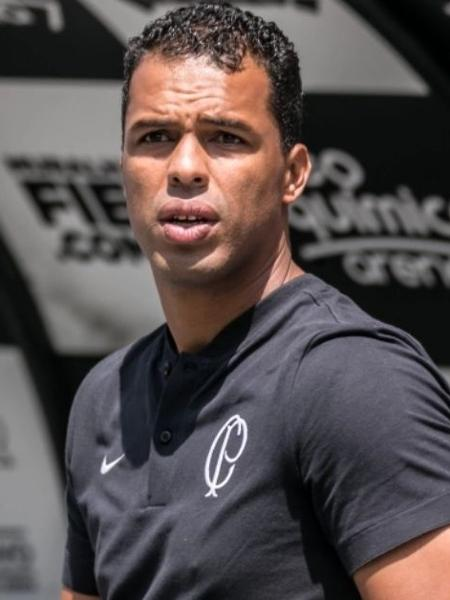

Time do Corinthians
 Cássio Roberto Ramos é um futebolista brasileiro que atua como goleiro. Atualmente joga no Corinthians. Cássio começou sua carreira no Grêmio e, em pouco tempo jogando no clube, foi promovido à equipe principal. Nascimento: 6 de junho de 1987 (idade 35 anos), Veranópolis, Rio Grande do Sul
Altura: 1,96 m
Cássio Roberto Ramos é um futebolista brasileiro que atua como goleiro. Atualmente joga no Corinthians. Cássio começou sua carreira no Grêmio e, em pouco tempo jogando no clube, foi promovido à equipe principal. Nascimento: 6 de junho de 1987 (idade 35 anos), Veranópolis, Rio Grande do Sul
Altura: 1,96 m
 Fagner Conserva Lemos, mais conhecido apenas como Fagner, é um futebolista brasileiro que atua como lateral-direito. Atualmente, joga pelo Corinthians. Nascimento: 11 de junho de 1989 (idade 33 anos), São Paulo, São Paulo
Filhos: Henrique Lemos, Lucca Lemos
Altura: 1,68 m
Cônjuge: Bárbara Lemos
Apelido: Tesoura
Data de nasc: 11 de junho de 1989 (33 anos)
Fagner Conserva Lemos, mais conhecido apenas como Fagner, é um futebolista brasileiro que atua como lateral-direito. Atualmente, joga pelo Corinthians. Nascimento: 11 de junho de 1989 (idade 33 anos), São Paulo, São Paulo
Filhos: Henrique Lemos, Lucca Lemos
Altura: 1,68 m
Cônjuge: Bárbara Lemos
Apelido: Tesoura
Data de nasc: 11 de junho de 1989 (33 anos)
Carlos Gilberto Nascimento Silva, mais conhecido como Gil, é um futebolista brasileiro que atua como zagueiro. Atualmente, joga pelo Corinthians. Nascimento: 12 de junho de 1987 (idade 35 anos), Campos dos Goytacazes, Rio de Janeiro
Equipe atual: Sport Club Corinthians Paulista (#4 / Zagueiro)
Altura: 1,93 m
Apelido: Gil, Gamarra Negro, Gil Goiaba
Clube atual: Corinthians
Data de nasc: 12 de junho de 1987 (35 anos)
Fabián Cornelio Balbuena González, mais conhecido apenas como Balbuena, é um futebolista paraguaio que atua como zagueiro. Atualmente, joga no Corinthians, emprestado pelo Dínamo de Moscouh. Nascimento: 23 de agosto de 1991 (idade 31 anos), Cidade do Leste, Paraguai
Equipes atuais: Sport Club Corinthians Paulista (#31 / Zagueiro), Seleção Paraguaia de Futebol (#4 / Zagueiro)
Pais: Lourdes González, Cornelio Balbuena
Parceira: Adriana Duarte
Altura: 1,88 m
Anos: Clubes
Apelido: General
Fábio Santos Romeu, mais conhecido apenas como Fábio Santos, é um futebolista brasileiro que atua como lateral-esquerdo. Atualmente, joga pelo Corinthians. Nascimento: 16 de setembro de 1985 (idade 37 anos), São Paulo, São Paulo
Número: 6 (Sport Club Corinthians Paulista / Zagueiro)
Altura: 1,79 m
Filhas: Eduarda
Pais: Elenice Romeu, Cesinando Romeu
Fausto Mariano Vera, mais conhecido como Fausto Vera, é um futebolista argentino que atua como volante. Atualmente, joga pelo Corinthians. Nascimento: 26 de março de 2000 (idade 23 anos), Hurlingham, Argentina
Equipes atuais: Sport Club Corinthians Paulista (#5 / Meia), Argentina
Altura: 1, 80m
Anos: Clubes
Clube atual: Corinthians
Nome completo: Fausto Mariano Vera
Pé: destro
Renato Soares de Oliveira Augusto, mais conhecido como Renato Augusto, é um futebolista brasileiro que atua como meio-campista. Atualmente joga pelo Corinthians. Nascimento: 8 de fevereiro de 1988 (idade 35 anos), Rio de Janeiro, Rio de Janeiro
Equipes atuais: Sport Club Corinthians Paulista (#8 / Meia), Brazil
Pais: Luiz Carlos Augusto, Salete Augusto
Giuliano Victor de Paula, mais conhecido apenas como Giuliano, é um futebolista brasileiro que atua como meio-campista. Atualmente joga pelo Corinthians. Nascimento: 31 de maio de 1990 (idade 32 anos), Curitiba, Paraná
Equipe atual: Sport Club Corinthians Paulista (#20 / Meia)
Irmãos: Nilson Henrique de Paula
Cônjuge: Andressa Domingues Marchi de Paula
Altura: 1,72 m
Clube atual: Corinthians
José Paulo Bezerra Maciel Júnior, mais conhecido como Paulinho, é um futebolista brasileiro que atua como volante. Atualmente, joga no Corinthians. Nascimento: 25 de julho de 1988 (idade 34 anos), São Paulo, São Paulo
Equipe atual: Sport Club Corinthians Paulista (#15 / Meia)
Salário: 3,64 milhões GBP (2013)
Pais: José Paulo Bezerra Maciel, Erika Lima Nascimento
Cônjuge: Vivian Pereira
Altura: 1,83 m
Róger Krug Guedes, mais conhecido como Róger Guedes, é um futebolista brasileiro que atua como ponta-esquerda. Atualmente, joga no Corinthians. Nascimento: 2 de outubro de 1996 (idade 26 anos), Ibirubá, Rio Grande do Sul
Filhos: Ryan Guedes, Maya Guedes
Equipe atual: Sport Club Corinthians Paulista (#10 / Atacante)
Peso: 76 kg
Pais: Marisa Krug Guedes, Valter Farias Guedes
Cônjuge: Sindy Guedes (desde 2015)
Altura: 1,82 m
Yuri Alberto Monteiro da Silva é um futebolista brasileiro que atua como centroavante. Atualmente joga no Corinthians. Nascimento: 18 de março de 2001 (idade 22 anos), São José dos Campos, São Paulo
Equipes atuais: Sport Club Corinthians Paulista (#9 / Atacante), Seleção Brasileira (Atacante)
Altura: 1,82 m
Anos: Clubes
Clube atual: Corinthians
Técnico

Fernando Lázaro Rodrigues Alves é um treinador de futebol brasileiro. Atualmente comanda o Corinthians. Nascimento: 3 de junho de 1981 (idade 41 anos), São Paulo, São Paulo.